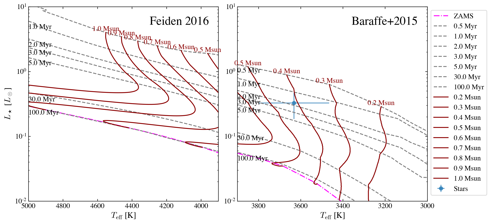
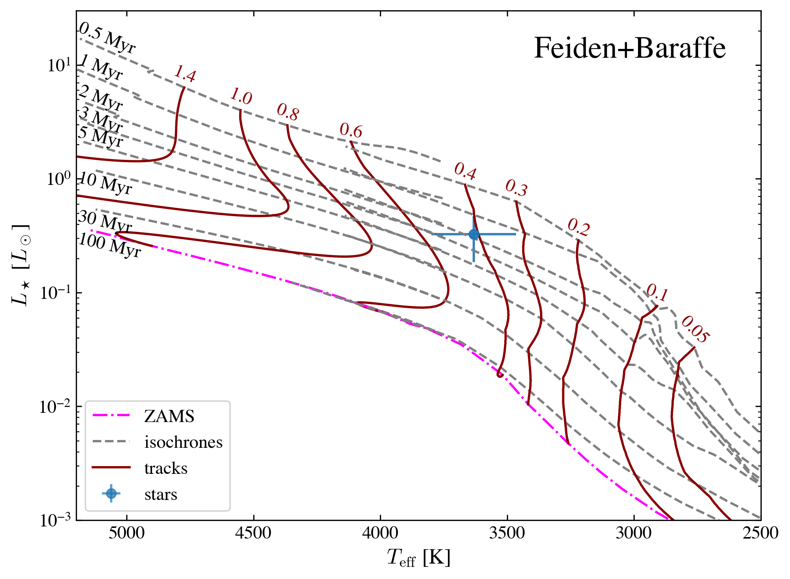
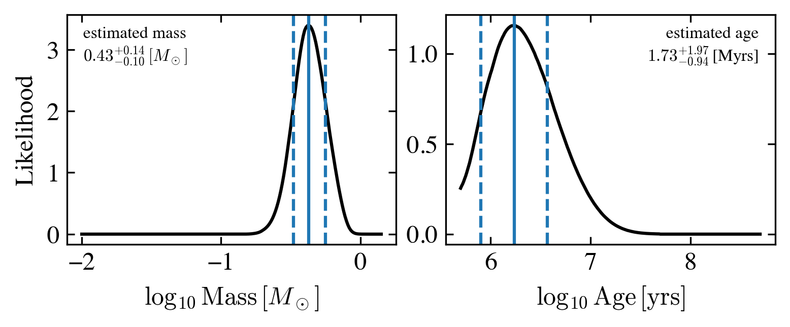
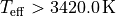
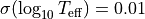
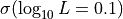
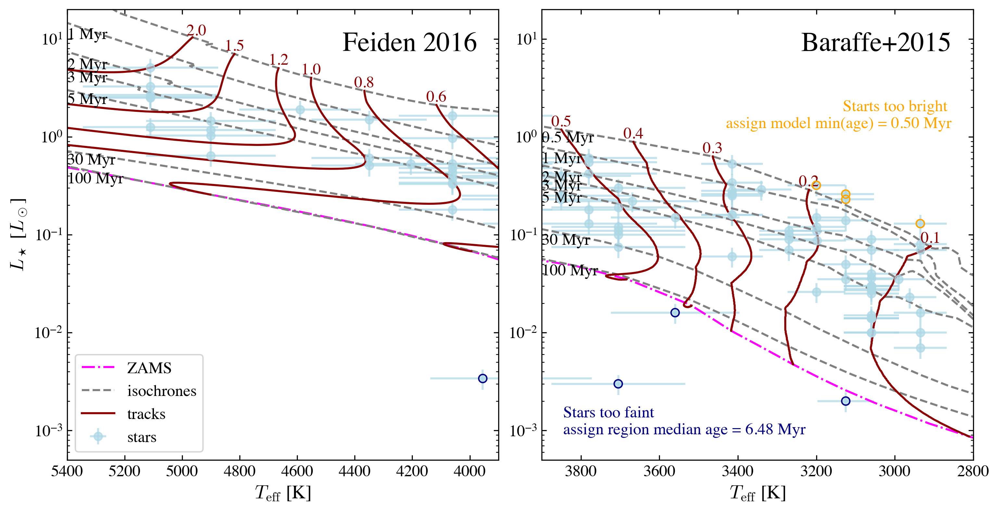
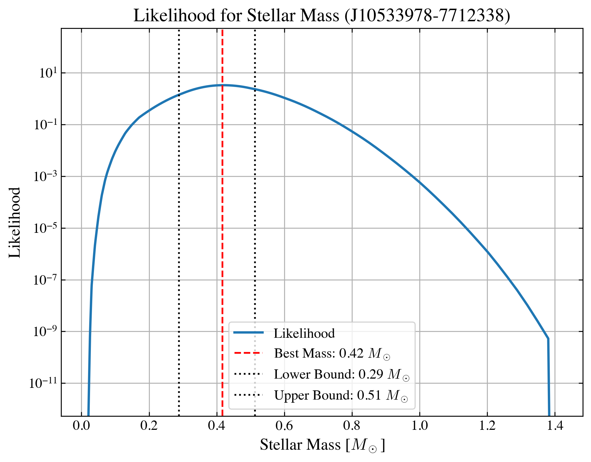

1. Quick Start¶
This is the basics of using ysoisochrone
Installation¶
Install the package¶
The easiest way to install this package is using terminal and pip package from Python.
pip install ysoisochrone
To install this package manually, you can download the zip file from Github Release(https://github.com/DingshanDeng/ysoisochrone/tags) and then unzip it. Then you can change directory to the root direcotry of this package (where the setup.py exists).
pip install .
which should install the necessary dependencies.
First make sure you have successfully installed the package. You can find out this by trying to import
[ ]:
import ysoisochrone
# there are also other useful packages you might need to use this tutorial
import os, sys
import numpy as np
import pandas as pd
import matplotlib.pyplot as plt
Download the stellar evolutionary models¶
When using the package for the first time, it will try to download the isochrones from online sources, so make sure you also have internet access. You might need to download some large files (GB) for using the isochrones from certain models (such as PARSEC), so you also need to make sure you have a few GB left in the disk where you need to store the data.
By default, the code will create a folder called isochrones_data in the same directory that you are running the Python script. You can also change this by editing the save_dir argument in the download_xxx functions.
First, let’s try to download the track from Baraffe et al. (2015) and Feiden (2016).
[ ]:
ysoisochrone.utils.download_baraffe_tracks()
Downloading: 100%|█████████████████████████████████████████████| 1.35M/1.35M [00:00<00:00, 1.46MB/s]
Downloaded isochrones_data/Baraffe2015/BHAC15_tracks+structure
If you end up using the Baraffe et al. (2015) tracks, please cite from: https://ui.adsabs.harvard.edu/abs/2015A%26A...577A..42B/abstract
1
NOTE. If you want to store the data to a different directory, you can use
save_dir_yourpath = 'Your_prefered_path'
ysoisochrone.utils.download_baraffe_tracks(save_dir=save_dir_yourpath)
[ ]:
# download Feiden tracks
ysoisochrone.utils.download_feiden_trk_tracks()
Downloading and extracting all_GS98_p000_p0_y28_mlt1.884.tgz...
Downloading: 100%|█████████████████████████████████████████████| 39.7M/39.7M [00:07<00:00, 5.66MB/s]
Downloaded isochrones_data/Feiden2016_trk/all_GS98_p000_p0_y28_mlt1.884.tgz
Extracted isochrones_data/Feiden2016_trk/all_GS98_p000_p0_y28_mlt1.884.tgz into isochrones_data/Feiden2016_trk
All files downloaded and extracted in isochrones_data/Feiden2016_trk
If you use the Feiden tracks, please cite from: https://ui.adsabs.harvard.edu/abs/2016IAUS..314...79F/abstract
1
Your first target¶
Prepare the data¶
Then, you need to prepare your own data. The data needs to be in the format of pandas.DataFrame and with following columns ['Source', 'Teff[K]', 'e_Teff[K]', 'Luminosity[Lsun]', 'e_Luminosity[Lsun]'].
'Source'is the list of source names. It can be just the ID numbers you prefer.'Teff[K]'is the effective temperature in the unit of Kelvin.and
'e_Teff[K]'is the associated uncertainties.'Luminosity[Lsun]'is the bolometric luminosities of these targets un the unit of solar luminosity.and
'e_Luminosity[Lsun]'is their uncertainties.
Here the uncertainties are value assuming they follow the Gaussian distribution.
[ ]:
# Set up a DataFrame in Python script
# For this target Sz71, values are from Alcala+2017,
# and corrected later with the Gaia DR3 distance in Manara+2023
df_prop = pd.DataFrame({
'Source': ['Sz71'],
'Teff[K]': np.array([3632.0]),
'e_Teff[K]': np.array([167.0]),
'Luminosity[Lsun]': np.array([0.327]),
'e_Luminosity[Lsun]': np.array([0.1420])
})
Plot it on the HRD¶
have a look on the newly downloaded isochrones and plot the test target on it
[ ]:
import matplotlib.pyplot as plt
# NOTE:
# if this is your first time using any of these tracks
# it would take longer to format the isochrones that you just downloaded
# and this block takes about 2 min on a Mac with M1 chip
ylim_set = [1e-2, 10]
fig, axes = plt.subplots(1,2,figsize=(12, 6),gridspec_kw={'wspace':0.1})
# set up the Isochrone class
isochrone = ysoisochrone.isochrone.Isochrone()
isochrone.set_tracks('Feiden2016')
ysoisochrone.plotting.plot_hr_diagram(isochrone, df_prop, ax_set=axes[0], xlim_set=[5000, 3900], ylim_set=ylim_set)
axes[0].get_legend().remove()
axes[0].annotate('Feiden 2016', xy=(0.95, 0.95), xycoords='axes fraction', ha='right', va='top', fontsize=20)
# set up the Isochrone class
isochrone = ysoisochrone.isochrone.Isochrone()
isochrone.set_tracks('Baraffe2015')
ysoisochrone.plotting.plot_hr_diagram(isochrone, df_prop, ax_set=axes[1], xlim_set=[3900, 3000], ylim_set=ylim_set)
axes[1].set_ylabel('')
axes[1].annotate('Baraffe+2015', xy=(0.95, 0.95), xycoords='axes fraction', ha='right', va='top', fontsize=20)
plt.show()

Here the blue points with errorbars are the stars with uncertainties; dark red solid lines are the stellar evolutionary tracks for different stellar masses; dashed grey lines are the isochorones; We also have an algrithm to automatically detect the zero-age-main-sequence (ZAMS) curve in the tracks, and that is shown as magenta dot-dashed line.
NOTE
On each track, the points that are older than the ZAMS will be ignored in the age/mass determination later.
For the targets that are very close to ZAMS, their estimated ages cannot be trusted blindly, and they are in general less reliable
Here we also provide a simple def to plot feiden + baraffe tracks following the style in Pascucci et al. (2016) Figure 1. The nonmagnetic evolutionary tracks from Feiden (2016) are plotted for effective temperatures greater than 3700 K (spectral type M1 and earlier) and masses greater than 0.5 Msun. For effective temperatures lower than 4200 K and masses lower than 0.5 Msun we plot the evolutionary tracks from Baraffe et al. (2015).
[ ]:
ysoisochrone.plotting.simple_plot_hr_diagram_feiden_n_baraffe(df_prop)
# if you do not want to plot the star, just use
# ysoisochrone.plotting.simple_plot_hr_diagram_feiden_n_baraffe()
# you can also specify the panel information using
# fig, ax = plt.subplots(1,1,figsize=(7, 6))
# ysoisochrone.plotting.simple_plot_hr_diagram_feiden_n_baraffe(df_prop, ax_set=ax)
# plot.show()
1

Estimate its age and mass from Bayesian inference approach¶
Our primary method is a Bayesian inference approach, and the Python code builds on the IDL version developed in Pascucci et al. (2016). The pre-main-sequence evolutionary models from both Feiden (2016) and Baraffe et al. (2015) are adopted for hot ( ) and
cool stars (
) and
cool stars ( ), respectively.
), respectively.
We note that we do not blend the two tracks, and only use one track at a time depending on the input stellar effective temperature. As shown in the Figure above (as well as in Pascucci et al. (2016) Figure 1). The two models overlap with each other well at T_{\rm eff} \sim 3,900, and larger discrepancies are presented for youngest ones (\sim 0.5\,{\rm Myrs}).
We provide a simple way to use this as
[ ]:
best_logmass_output, best_logage_output, lmass_all, lage_all, flag_all =\
ysoisochrone.bayesian.derive_stellar_mass_age(df_prop, model='Baraffe_n_Feiden', plot=True)
0%| | 0/1 [00:00<?, ?it/s]

100%|██████████| 1/1 [00:00<00:00, 3.69it/s]
The model here is for calling different evolutionary tracks, by default we use model='Baraffe_n_Feiden', which is the combination of Baraffe and Feiden tracks. Other choices include: 'Baraffe2015', 'Feiden2016', 'PARSEC_v2p0' (same as 'PARSEC'), 'PARSEC_v1p2' or 'custome'. If you want to use your own customized isochrone, you need to set the model = 'custome', and also provide the absolute directory for the isochrone matrix file isochrone_mat_file. See
documentation for details. Here we also turn on the plot = True to show the intermediate diagnoostic plot.
The outputs are:
best_logmass_output(log10 of mass in the unit of solar masses),best_logage_output(log10 of age in the unit of yrs) are the arrays that includes the best derived values and their lower and upper boundaries from the 68% confidence intervals.
lmass_allandlage_allare the distributions of the likelihood functions for each source; they could be used to estimate the medians based on the likelihood distributions.
An example of saving these outputs are
[ ]:
df_output_mass = pd.DataFrame(np.array(best_logmass_output), columns=['logmass[Msun]', 'lw_logmass[Msun]', 'up_logmass[Msun]'])
df_output_age = pd.DataFrame(np.array(best_logage_output), columns=['logage[yrs]', 'lw_logage[yrs]', 'up_logage[yrs]'])
df_output = pd.concat([df_prop, df_output_mass, df_output_age], axis=1)
df_output.loc[:, 'mass[Msun]'] = 10**df_output.loc[:, 'logmass[Msun]']
df_output.loc[:, 'lw_mass[Msun]'] = 10**df_output.loc[:, 'lw_logmass[Msun]']
df_output.loc[:, 'up_mass[Msun]'] = 10**df_output.loc[:, 'up_logmass[Msun]']
df_output.loc[:, 'age[Myrs]'] = 10**df_output.loc[:, 'logage[yrs]']/1e6
df_output.loc[:, 'lw_age[Myrs]'] = 10**df_output.loc[:, 'lw_logage[yrs]']/1e6
df_output.loc[:, 'up_age[Myrs]'] = 10**df_output.loc[:, 'up_logage[yrs]']/1e6
df_output.loc[:, 'flag'] = flag_all
for idx in df_output.index:
print('For target %s'%(df_output.loc[idx, 'Source']))
print('The estimated mass is: %.2f + %.2f - %.2f [Msun]'%(df_output.loc[idx, 'mass[Msun]'],\
df_output.loc[idx, 'up_mass[Msun]']-df_output.loc[idx, 'mass[Msun]'],\
df_output.loc[idx, 'mass[Msun]']-df_output.loc[idx, 'lw_mass[Msun]']))
print('The estimated age is: %.2f + %.2f - %.2f [Myrs]'%(df_output.loc[idx, 'age[Myrs]'],\
df_output.loc[idx, 'up_age[Myrs]']-df_output.loc[idx, 'age[Myrs]'],\
df_output.loc[idx, 'age[Myrs]']-df_output.loc[idx, 'lw_age[Myrs]']))
For target Sz71
The estimated mass is: 0.43 + 0.14 - 0.10 [Msun]
The estimated age is: 1.73 + 1.97 - 0.94 [Myrs]
The distribution of the two likelihood functions for mass and age (lmass and lage) for this target has already been presented in the plot above. But if you want to take a look again, you can read them out follow this plotting script
[ ]:
idx = 0
lmass_t = lmass_all['target_%i'%(idx)]
lage_t = lage_all['target_%i'%(idx)]
fig, axes = plt.subplots(1,2,figsize=(6, 2),gridspec_kw={'wspace':0.15})
axes[0].plot(lmass_t[0], lmass_t[1], color='k')
axes[0].axvline(df_output.loc[idx, 'logmass[Msun]'])
axes[0].axvline(df_output.loc[idx, 'up_logmass[Msun]'], linestyle='--')
axes[0].axvline(df_output.loc[idx, 'lw_logmass[Msun]'], linestyle='--')
text_mass = 'estimated mass\n' + '${%.2f}^{+%.2f}_{-%.2f}\,[M_\odot]$'%(df_output.loc[idx, 'mass[Msun]'],\
df_output.loc[idx, 'up_mass[Msun]']-df_output.loc[idx, 'mass[Msun]'],\
df_output.loc[idx, 'mass[Msun]']-df_output.loc[idx, 'lw_mass[Msun]'])
axes[0].annotate(text_mass, xy=(0.05, 0.95), xycoords='axes fraction', ha='left', va='top', fontsize=8)
axes[0].set_xlabel(r'$\log_{10}\,{\rm Mass}\,[M_\odot]$')
axes[0].set_ylabel('Likelihood')
axes[1].plot(lage_t[0], lage_t[1], color='k')
axes[1].axvline(df_output.loc[idx, 'logage[yrs]'])
axes[1].axvline(df_output.loc[idx, 'up_logage[yrs]'], linestyle='--')
axes[1].axvline(df_output.loc[idx, 'lw_logage[yrs]'], linestyle='--')
text_age = 'estimated age\n' + '${%.2f}^{+%.2f}_{-%.2f}\,$[Myrs]'%(df_output.loc[idx, 'age[Myrs]'],\
df_output.loc[idx, 'up_age[Myrs]']-df_output.loc[idx, 'age[Myrs]'],\
df_output.loc[idx, 'age[Myrs]']-df_output.loc[idx, 'lw_age[Myrs]'])
axes[1].annotate(text_age, xy=(0.95, 0.95), xycoords='axes fraction', ha='right', va='top', fontsize=8)
axes[1].set_xlabel(r'$\log_{10}\,{\rm Age}\,[{\rm yrs}]$')
axes[1].set_ylabel('')
plt.show()

of course you can save these output
[ ]:
# Then you can save this output file
df_output.to_csv('example_target_one_o.csv', index=False)
Your first large dataset¶
Read in a csv table¶
When dealing with larger dataset, the easiest way is to create a .csv file using EXCEL or similar software, and this file includes these columns, and then you can utilize pandas to read in this file. Later you use this as an input.
Here we prepared an example file called 'example_targets.csv' in this tutorial. This is the Cham I sample that discussed in Pascucci et al. (2016).
[ ]:
df_prop = pd.read_csv('example_targets.csv', comment='#')
df_prop
| Source | Teff[K] | Luminosity[Lsun] | Ref | |
|---|---|---|---|---|
| 0 | J10533978-7712338 | 3560.0 | 0.016 | M16b |
| 1 | J10555973-7724399 | 4060.0 | 0.180 | M16a |
| 2 | J10561638-7630530 | 2935.0 | 0.080 | M16b |
| 3 | J10563044-7711393 | 4060.0 | 0.430 | M16a |
| 4 | J10574219-7659356 | 3415.0 | 0.530 | M16b |
| ... | ... | ... | ... | ... |
| 88 | J11173700-7704381 | 3780.0 | 0.420 | M14 |
| 89 | J11175211-7629392 | 3198.0 | 0.087 | L07 |
| 90 | J11183572-7935548 | 3125.0 | 0.260 | M16b |
| 91 | J11241186-7630425 | 3060.0 | 0.030 | M16b |
| 92 | J11432669-7804454 | 3060.0 | 0.090 | M16b |
93 rows × 4 columns
Reference here: L07 = Luhman (2007); M14 = Manara et al. 2014; M16a = Manara et al. 2016a; M16b = Manara et al. 2016b. They are also summarized in the head of the 'example_targets.csv'.
NOTE
The uncertainties for  and
and  are required in this approach, if you have no idea on what would be the
are required in this approach, if you have no idea on what would be the 'e_Teff[K]' and/or 'e_Luminosity[Lsun]' (or just want a quick test), you can turn on the option no_uncertainties=True in ysoisochrone.bayesian.derive_stellar_mass_age. In this way, the code will automatically assign the uncertainties to your sample following the choice made in Pascucci et al.
(2016) with the pre-assumed uncertainties for and :
for

and
for cooler targets.
for all targets
You can also assign these default uncertainties to your DataFrame (df_prop) by calling
[ ]:
err_Teff = ysoisochrone.utils.assign_unc_teff(df_prop['Teff[K]'].values)
err_Lumi = ysoisochrone.utils.assign_unc_lumi(df_prop['Luminosity[Lsun]'].values)
df_prop['e_Teff[K]'] = err_Teff
df_prop['e_Luminosity[Lsun]'] = err_Lumi
we encourage the users to set up your own uncertainties in the input df_prop for your targets even you do not have the meausred values. You can do this by changing the numbers in the input .csv file or utilize the feature for pandas.DataFrame
df_prop.loc[:, 'e_Teff[K]'] = # An array of the e_Teff you set up
df_prop.loc[:, 'e_Luminosity[Lsun]'] = # An array of the e_Luminosity you set up
TIPS
pandas.DataFrame is a very versatile class. Please refer to Data Frame for how to handle the pandas.DataFrame. It is a powerful tool that you can not only import data from .csv files but many other format such as .xlsx, .json, and .html. For theo output files, it can also be utilized to generate latex format files .tex so it can be easily import to your on going latex manuscript.
One useful script for astronomers could be reading the machine readable tables (MRT), such as the table 1 in Pascucci et al. 2016 (you need to download your own MRT tables)
import astropy.io.ascii
# read in the Pasccuci+2016 table 1
file_t = os.path.join(file_dir_t, 'yourtable_mrt.txt')
# Read the table with the correct data start line
table_t = ascii.read(file_t, delimiter='|')
# Convert to pandas DataFrame
df_yourtable = table_t.to_pandas()
Have a look on HRD and define targets that are toobright and/or too faint¶
You can overplot them on the top of the isochrones in the Hertzsprung–Russell diagram (HR diagram) and check for the targets that are too bright/faint.
WARNING Normaly we need to assign ages to the targets that are too bright/faint otherwise the Bayesian method would not give a robust estimate. So we assign the age as follows and find their best-fit masses from the cloest track.
for targets that are too bright, we assign the youngest age from the model grid.
for targets that are too faint (could because it has an edge-on disk), we assign the median age of the star-forming region.
[ ]:
# you need to specify the source names
toobright = ['J11065906-7718535','J11094260-7725578',
'J11105597-7645325','J11183572-7935548']
toofaint = ['J10533978-7712338','J11063945-7736052','J11082570-7716396',
'J11111083-7641574','J11160287-7624533']
# the median age for Cham I star-forming region
median_age = 6.48 # Myrs, the age took from Pasucci+2016 choice
[ ]:
# form the df_toobright and df_toofaint only for plot
idx_toobright = []
idx_toofaint = []
for idx_t in df_prop.index:
if df_prop.loc[idx_t, 'Source'] in toobright:
idx_toobright.append(idx_t)
if df_prop.loc[idx_t, 'Source'] in toofaint:
idx_toofaint.append(idx_t)
df_toobright = df_prop.loc[idx_toobright]
df_toofaint = df_prop.loc[idx_toofaint]
[ ]:
# Plot HDR
ylim_set = [5e-4, 20]
fig, axes = plt.subplots(1,2,figsize=(12, 6),gridspec_kw={'wspace':0.1})
# set up the Isochrone class
isochrone = ysoisochrone.isochrone.Isochrone()
isochrone.set_tracks('Feiden2016')
# sometimes the automatic algrithm does not give good-looking texts
# you can change them like this:
# define user customized masses texts
masses_to_plot_t = [0.6, 0.8, 1.0, 1.2, 1.5, 2.0]
mass_positions_t = ['auto','auto','auto','auto','auto',(4950, 10)] # the tuple is the data location for this text
# you can also change the rotaion of the texts
# mass_rotation_t = [0, 0, 0, 0, 0, -19]
ysoisochrone.plotting.plot_hr_diagram(isochrone, df_prop, ax_set=axes[0], xlim_set=[5400, 3900], ylim_set=ylim_set,
color_stars='lightblue',
masses_to_plot=masses_to_plot_t,
mass_positions=mass_positions_t)
# some additional useful parameters that can be changed for plot_hr_diagram
# mass_rotation=mass_rotation_t,
# ages_to_plot=[0.5e6, 1.0e6, 5.0e6, 10.0e6, 100.0e6], # in the unit of yr
# age_positions=['auto','auto','auto','auto','auto']
# age_rotation=[0, 0, 0, 0, 0]
axes[0].legend(loc='lower left')
axes[0].annotate('Feiden 2016', xy=(0.95, 0.95), xycoords='axes fraction', ha='right', va='top', fontsize=20)
# set up the Isochrone class
isochrone = ysoisochrone.isochrone.Isochrone()
isochrone.set_tracks('Baraffe2015')
masses_to_plot_t = [0.1, 0.2, 0.3, 0.4, 0.5]
ysoisochrone.plotting.plot_hr_diagram(isochrone, df_prop, ax_set=axes[1], xlim_set=[3900, 2800], ylim_set=ylim_set,
color_stars='lightblue',
masses_to_plot=masses_to_plot_t)
axes[1].set_ylabel('')
axes[1].get_legend().remove()
axes[1].annotate('Baraffe+2015', xy=(0.95, 0.95), xycoords='axes fraction', ha='right', va='top', fontsize=20)
# plot the too bright and too faint ones
for ax_t in axes:
ax_t.scatter(df_toobright['Teff[K]'].values, df_toobright['Luminosity[Lsun]'].values, edgecolor='orange', color='None', zorder=10)
ax_t.scatter(df_toofaint['Teff[K]'].values, df_toofaint['Luminosity[Lsun]'].values, edgecolor='navy', color='None', zorder=10)
axes[1].annotate('Stars too faint \nassign region median age = %.2f Myr'%(median_age),
(0.05, 0.05), xycoords='axes fraction', ha='left', va='bottom',
color='navy')
axes[1].annotate('Starts too bright \nassign model min(age) = %.2f Myr'%(10**np.nanmin(isochrone.log_age)/1e6),
(0.95, 0.80), xycoords='axes fraction', ha='right', va='top',
color='orange')
plt.show()

Estimate Mass and Ages¶
Then, to estimate their masses and ages using the Bayesian inference approach
[ ]:
best_logmass_output, best_logage_output, lmass_all, lage_all, flag_all =\
ysoisochrone.bayesian.derive_stellar_mass_age(df_prop, model='Baraffe_n_Feiden', toobright=toobright, toofaint=toofaint, median_age=median_age)
# other useful options.
# isochrone_data_dir=YOU_DATA_DIR (set the isochrone data dir to the location you like, otherwise it defaultly saves to the same dir where you run the code and creates a folder called 'isochrones_data'),
# no_uncertainties=True (set to True if uncertainties are not inlucded in the df_prop),
# plot=False (whether to output the plot, default False),
# save_fig=False (whether to save the figures),
# fig_save_dir='figures' (where to save the figures),
# save_lfunc=False (whether to save the likelihood functions in a csv),
# csv_save_dir='lfunc_data' (where to save the likelihood functions)
100%|██████████| 93/93 [00:02<00:00, 35.98it/s]
An example of saving these output numbers are
[ ]:
df_output_mass = pd.DataFrame(np.array(best_logmass_output), columns=['logmass[Msun]', 'lw_logmass[Msun]', 'up_logmass[Msun]'])
df_output_age = pd.DataFrame(np.array(best_logage_output), columns=['logage[yrs]', 'lw_logage[yrs]', 'up_logage[yrs]'])
df_output = pd.concat([df_prop, df_output_mass, df_output_age], axis=1)
df_output.loc[:, 'mass[Msun]'] = 10**df_output.loc[:, 'logmass[Msun]']
df_output.loc[:, 'lw_mass[Msun]'] = 10**df_output.loc[:, 'lw_logmass[Msun]']
df_output.loc[:, 'up_mass[Msun]'] = 10**df_output.loc[:, 'up_logmass[Msun]']
df_output.loc[:, 'age[Myrs]'] = 10**df_output.loc[:, 'logage[yrs]']/1e6
df_output.loc[:, 'lw_age[Myrs]'] = 10**df_output.loc[:, 'lw_logage[yrs]']/1e6
df_output.loc[:, 'up_age[Myrs]'] = 10**df_output.loc[:, 'up_logage[yrs]']/1e6
df_output.loc[:, 'flag'] = flag_all
df_output
| Source | Teff[K] | Luminosity[Lsun] | Ref | e_Teff[K] | e_Luminosity[Lsun] | logmass[Msun] | lw_logmass[Msun] | up_logmass[Msun] | logage[yrs] | lw_logage[yrs] | up_logage[yrs] | mass[Msun] | lw_mass[Msun] | up_mass[Msun] | age[Myrs] | lw_age[Myrs] | up_age[Myrs] | flag | |
|---|---|---|---|---|---|---|---|---|---|---|---|---|---|---|---|---|---|---|---|
| 0 | J10533978-7712338 | 3560.0 | 0.016 | M16b | 163.944059 | 0.003684 | -0.460000 | -0.570000 | -0.370000 | 6.48000 | NaN | NaN | 0.346737 | 0.269153 | 0.426580 | 3.019952 | NaN | NaN | toofaint |
| 1 | J10555973-7724399 | 4060.0 | 0.180 | M16a | 186.969910 | 0.041447 | -0.125757 | -0.165757 | -0.045757 | 7.17897 | 6.91897 | 7.44897 | 0.748587 | 0.682720 | 0.900000 | 15.099759 | 8.297935 | 28.117066 | good |
| 2 | J10561638-7630530 | 2935.0 | 0.080 | M16b | 67.580872 | 0.018421 | -0.960000 | -1.010000 | -0.880000 | 5.70897 | 5.69897 | 5.90897 | 0.109648 | 0.097724 | 0.131826 | 0.511646 | 0.500000 | 0.810905 | good |
| 3 | J10563044-7711393 | 4060.0 | 0.430 | M16a | 186.969910 | 0.099011 | -0.065757 | -0.145757 | 0.024243 | 6.60897 | 6.34897 | 6.87897 | 0.859493 | 0.714895 | 1.057408 | 4.064153 | 2.233418 | 7.567806 | good |
| 4 | J10574219-7659356 | 3415.0 | 0.530 | M16b | 78.633281 | 0.122037 | -0.530000 | -0.570000 | -0.480000 | 5.76897 | 5.69897 | 5.85897 | 0.295121 | 0.269153 | 0.331131 | 0.587449 | 0.500000 | 0.722720 | good |
| ... | ... | ... | ... | ... | ... | ... | ... | ... | ... | ... | ... | ... | ... | ... | ... | ... | ... | ... | ... |
| 88 | J11173700-7704381 | 3780.0 | 0.420 | M14 | 174.075433 | 0.096709 | -0.290000 | -0.400000 | -0.180000 | 6.25897 | 5.98897 | 6.51897 | 0.512861 | 0.398107 | 0.660693 | 1.815390 | 0.974922 | 3.303467 | good |
| 89 | J11175211-7629392 | 3198.0 | 0.087 | L07 | 73.636671 | 0.020032 | -0.700000 | -0.780000 | -0.630000 | 6.42897 | 6.25897 | 6.59897 | 0.199526 | 0.165959 | 0.234423 | 2.685159 | 1.815390 | 3.971641 | good |
| 90 | J11183572-7935548 | 3125.0 | 0.260 | M16b | 71.955784 | 0.059867 | -0.780000 | -0.850000 | -0.720000 | 5.69897 | NaN | NaN | 0.165959 | 0.141254 | 0.190546 | 0.500000 | NaN | NaN | toobright |
| 91 | J11241186-7630425 | 3060.0 | 0.030 | M16b | 70.459104 | 0.006908 | -0.920000 | -1.010000 | -0.820000 | 6.64897 | 6.47897 | 6.80897 | 0.120226 | 0.097724 | 0.151356 | 4.456255 | 3.012798 | 6.441248 | good |
| 92 | J11432669-7804454 | 3060.0 | 0.090 | M16b | 70.459104 | 0.020723 | -0.890000 | -0.970000 | -0.820000 | 6.24897 | 6.04897 | 6.53897 | 0.128825 | 0.107152 | 0.151356 | 1.774067 | 1.119361 | 3.459155 | good |
93 rows × 19 columns
[ ]:
# Then you can save this output file
df_output.to_csv('example_targets_o.csv', index=False)
Quick demo on other methods¶
Now you already know how to work with your dataset, here we provide a quick demo on how to utilize other methods provided in this package
Closest grid point on isochrone¶
Of course we provide this option for you to simply estimate the stellar masses and ages from the grid point that has the closest and  to the target without using any Bayesian inference. This was the approach adopted in many literature works.
to the target without using any Bayesian inference. This was the approach adopted in many literature works.
NOTE This function is only provided to reproduce the results from literature, and as what was did there the uncertainties were not provided, and only the best fit mass is the output. We recommand using the Bayesian approaches shown above where the uncertainties can be obtained.
[ ]:
df_prop_t = df_prop.loc[2:2] # here we pick the 3rd target to demonstrate
best_logmass_output, best_logage_output = ysoisochrone.bayesian.derive_stellar_mass_age_closest_track(df_prop_t, model='Baraffe_n_Feiden', verbose=True)
100%|██████████| 1/1 [00:00<00:00, 32.34it/s]
Working on: J10561638-7630530
Closest match for J10561638-7630530: Age = 5.24e+05 yrs, Mass = 1.07e-01 Msun
Assuming age to derive stellar masses¶
In some cases, when a good measurement of stellar luminosity is unavailable, we also provide an option to set up the assumed age (assumed_age=6.48e6 in the example, it is in the unit of yr) to derive the stellar mass from the Bayesian inference.
[ ]:
# only take one target as an example
# here we choose the first target which is one of those that are too faint
idx = 0
df_prop_t = df_prop.loc[[idx]]
best_logmass_output_t = ysoisochrone.bayesian.derive_stellar_mass_assuming_age(df_prop_t, assumed_age=6.48e6, model='Baraffe_n_Feiden', plot=True)
df_output_mass_t = pd.DataFrame(np.array(best_logmass_output_t), columns=['logmass[Msun]', 'lw_logmass[Msun]', 'up_logmass[Msun]'])
df_output_t = pd.concat([df_prop_t, df_output_mass_t], axis=1)
df_output_t.loc[:, 'mass[Msun]'] = 10**df_output_t.loc[:, 'logmass[Msun]']
df_output_t.loc[:, 'lw_mass[Msun]'] = 10**df_output_t.loc[:, 'lw_logmass[Msun]']
df_output_t.loc[:, 'up_mass[Msun]'] = 10**df_output_t.loc[:, 'up_logmass[Msun]']
print('The estimated mass is: %.2f + %.2f - %.2f [Msun]'%(df_output_t.loc[idx, 'mass[Msun]'],\
df_output_t.loc[idx, 'up_mass[Msun]']-df_output_t.loc[idx, 'mass[Msun]'],\
df_output_t.loc[idx, 'mass[Msun]']-df_output_t.loc[idx, 'lw_mass[Msun]']))

The estimated mass is: 0.42 + 0.10 - 0.13 [Msun]
Or you can simply get the one with closest track, and this is the method adopted in Pascucci et al. (2016) for the targets that do not have good luminosity measurement.
NOTE This function is only provided to reproduce the results from literature, and as what was did there the uncertainties were not provided, and only the best fit mass is the output. We recommand using the Bayesian approaches shown above (with assumed age) where the uncertainties can be obtained.
[ ]:
# only take one target as an example
idx = 0
df_prop_t = df_prop.loc[[idx]]
best_logmass_output_t = ysoisochrone.bayesian.derive_stellar_mass_assuming_age_closest_trk(df_prop_t, assumed_age=6.48e6, model='Baraffe_n_Feiden')
print('estimated mass: %.2f [Msun]'%(10**best_logmass_output_t[0]))
estimated mass: 0.42 [Msun]